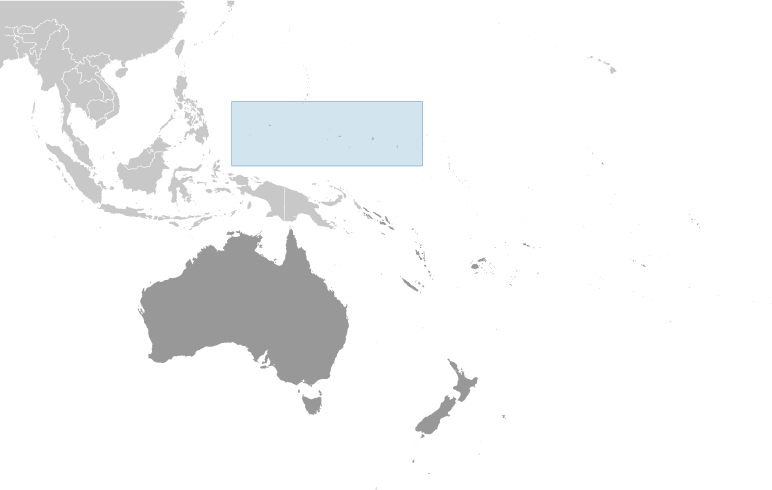
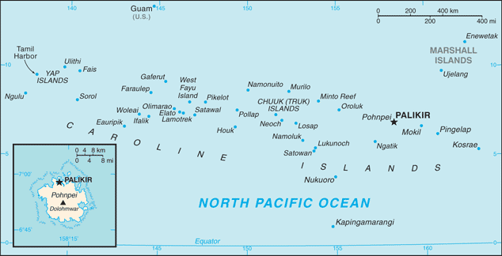
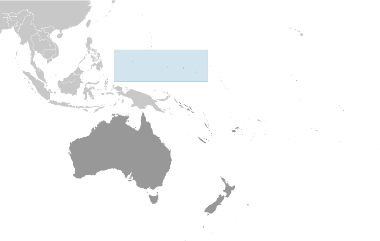
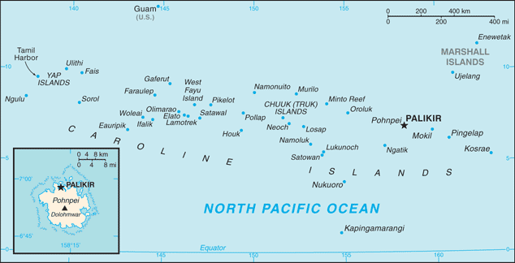

-
Introduction :: Micronesia, Federated States of
-
Background:
The Caroline Islands are a widely scattered archipelago in the western Pacific Ocean; they became part of a UN Trust Territory under US administration following World War II. The eastern four island groups adopted a constitution in 1979 and chose to become the Federated States of Micronesia. (The westernmost island group became Palau.) Independence came in 1986 under a Compact of Free Association (COFA) with the US, which was amended and renewed in 2004. Present concerns include large-scale unemployment, overfishing, overdependence on US foreign aid, and state perception of inequitable allocation of US aid.
As a signatory to the COFA with the US, Micronesians enjoy the right to migrate to and settle in any part of the US and its territories - this privilege reduces stresses on the island economy and the environment.
-
Geography :: Micronesia, Federated States of
-
Location:Oceania, island group in the North Pacific Ocean, about three-quarters of the way from Hawaii to IndonesiaGeographic coordinates:6 55 N, 158 15 EMap references:OceaniaArea:total: 702 sq kmland: 702 sq kmwater: 0 sq km (fresh water only)
note: includes Pohnpei (Ponape), Chuuk (Truk) Islands, Yap Islands, and Kosrae (Kosaie)
country comparison to the world: 192Area - comparative:four times the size of Washington, DC (land area only)Land boundaries:0 kmCoastline:6,112 kmMaritime claims:territorial sea: 12 nmexclusive economic zone: 200 nmClimate:tropical; heavy year-round rainfall, especially in the eastern islands; located on southern edge of the typhoon belt with occasionally severe damageTerrain:islands vary geologically from high mountainous islands to low, coral atolls; volcanic outcroppings on Pohnpei, Kosrae, and ChuukElevation:0 m lowest point: Pacific Ocean782 highest point: Nanlaud on PohnpeiNatural resources:timber, marine products, deep-seabed minerals, phosphateLand use:agricultural land: 25.5% (2011 est.)arable land: 2.3% (2011 est.) / permanent crops: 19.7% (2011 est.) / permanent pasture: 3.5% (2011 est.)forest: 74.5% (2011 est.)other: 0% (2011 est.)Irrigated land:0 sq km NA (2012)Population distribution:the majority of the populaton lives in the coastal areas of the high islands; the mountainous interior is largely uninhabited; less than half of the population lives in urban areasNatural hazards:typhoons (June to December)Environment - current issues:overfishing; climate change; water pollution, toxic pollution from mining; solid waste disposalEnvironment - international agreements:party to: Biodiversity, Climate Change, Climate Change-Kyoto Protocol, Desertification, Hazardous Wastes, Law of the Sea, Ozone Layer Protectionsigned, but not ratified: none of the selected agreementsGeography - note:composed of four major island groups totaling 607 islands -
People and Society :: Micronesia, Federated States of
-
Population:103,643 (July 2018 est.)country comparison to the world: 194Nationality:noun: Micronesian(s)adjective: Micronesian; Chuukese, Kosraen(s), Pohnpeian(s), YapeseEthnic groups:Chuukese/Mortlockese 49.3%, Pohnpeian 29.8%, Kosraean 6.3%, Yapese 5.7%, Yap outer islanders 5.1%, Polynesian 1.6%, Asian 1.4%, other 0.8% (2010 est.)Languages:English (official and common language), Chuukese, Kosrean, Pohnpeian, Yapese, Ulithian, Woleaian, Nukuoro, KapingamarangiReligions:Roman Catholic 54.7%, Protestant 41.1% (includes Congregational 38.5%, Baptist 1.1%, Seventh Day Adventist 0.8%, Assembly of God 0.7%), Mormon 1.5%, other 1.9%, none 0.7%, unspecified 0.1% (2010 est.)Age structure:0-14 years: 29.81% (male 15,707 /female 15,186)15-24 years: 19.38% (male 10,068 /female 10,020)25-54 years: 39.57% (male 19,799 /female 21,208)55-64 years: 7.09% (male 3,574 /female 3,777)65 years and over: 4.15% (male 1,943 /female 2,361) (2018 est.)population pyramid:
 The World Factbook Field Image ModalAustralia - Oceania :: Micronesia, Federated States of Print
The World Factbook Field Image ModalAustralia - Oceania :: Micronesia, Federated States of Print Image DescriptionThis is the population pyramid for Micronesia, Federated States of. A population pyramid illustrates the age and sex structure of a country's population and may provide insights about political and social stability, as well as economic development. The population is distributed along the horizontal axis, with males shown on the left and females on the right. The male and female populations are broken down into 5-year age groups represented as horizontal bars along the vertical axis, with the youngest age groups at the bottom and the oldest at the top. The shape of the population pyramid gradually evolves over time based on fertility, mortality, and international migration trends.
Image DescriptionThis is the population pyramid for Micronesia, Federated States of. A population pyramid illustrates the age and sex structure of a country's population and may provide insights about political and social stability, as well as economic development. The population is distributed along the horizontal axis, with males shown on the left and females on the right. The male and female populations are broken down into 5-year age groups represented as horizontal bars along the vertical axis, with the youngest age groups at the bottom and the oldest at the top. The shape of the population pyramid gradually evolves over time based on fertility, mortality, and international migration trends.
For additional information, please see the entry for Population pyramid on the Definitions and Notes page under the References tab.Dependency ratios:total dependency ratio: 62.4 (2015 est.)youth dependency ratio: 55.3 (2015 est.)elderly dependency ratio: 7.1 (2015 est.)potential support ratio: 14.1 (2015 est.)Median age:total: 25.5 yearsmale: 24.7 yearsfemale: 26.2 years (2018 est.)country comparison to the world: 156Population growth rate:-0.55% (2018 est.)country comparison to the world: 223Birth rate:19.6 births/1,000 population (2018 est.)country comparison to the world: 80Death rate:4.2 deaths/1,000 population (2018 est.)country comparison to the world: 208Net migration rate:-20.9 migrant(s)/1,000 population (2017 est.)country comparison to the world: 220Population distribution:the majority of the populaton lives in the coastal areas of the high islands; the mountainous interior is largely uninhabited; less than half of the population lives in urban areasUrbanization:urban population: 22.7% of total population (2018)rate of urbanization: 1.05% annual rate of change (2015-20 est.)Major urban areas - population:7,000 PALIKIR (capital) (2018)Sex ratio:at birth: 1.05 male(s)/female (2017 est.)0-14 years: 1.03 male(s)/female (2017 est.)15-24 years: 1.01 male(s)/female (2017 est.)25-54 years: 0.94 male(s)/female (2017 est.)55-64 years: 0.97 male(s)/female (2017 est.)65 years and over: 0.81 male(s)/female (2017 est.)total population: 0.98 male(s)/female (2017 est.)Maternal mortality rate:100 deaths/100,000 live births (2015 est.)country comparison to the world: 72Infant mortality rate:total: 19.1 deaths/1,000 live births (2018 est.)male: 21.2 deaths/1,000 live births (2018 est.)female: 16.9 deaths/1,000 live births (2018 est.)country comparison to the world: 81Life expectancy at birth:total population: 73.4 years (2018 est.)male: 71.3 years (2018 est.)female: 75.6 years (2018 est.)country comparison to the world: 137Total fertility rate:2.37 children born/woman (2018 est.)country comparison to the world: 83Health expenditures:13.7% of GDP (2014)country comparison to the world: 5Physicians density:0.19 physicians/1,000 population (2009)Hospital bed density:3.2 beds/1,000 population (2009)Drinking water source:improved: urban: 94.8% of populationrural: 87.4% of populationtotal: 89% of populationunimproved: urban: 5.2% of populationrural: 12.6% of populationtotal: 11% of population (2015 est.)Sanitation facility access:improved: urban: 85.1% of population (2015 est.)rural: 49% of population (2015 est.)total: 57.1% of population (2015 est.)unimproved: urban: 14.9% of population (2015 est.)rural: 51% of population (2015 est.)total: 42.9% of population (2015 est.)HIV/AIDS - adult prevalence rate:NAHIV/AIDS - people living with HIV/AIDS:NAHIV/AIDS - deaths:NAMajor infectious diseases:note: active local transmission of Zika virus by Aedes species mosquitoes has been identified in this country (as of August 2016); it poses an important risk (a large number of cases possible) among US citizens if bitten by an infective mosquito; other less common ways to get Zika are through sex, via blood transfusion, or during pregnancy, in which the pregnant woman passes Zika virus to her fetus
Obesity - adult prevalence rate:45.8% (2016)country comparison to the world: 10Education expenditures:12.5% of GDP (2015)country comparison to the world: 2 -
Government :: Micronesia, Federated States of
-
Country name:conventional long form: Federated States of Micronesiaconventional short form: nonelocal long form: Federated States of Micronesialocal short form: noneformer: New Philippines; Caroline Islands; Trust Territory of the Pacific Islands, Ponape, Truk, and Yap Districtsabbreviation: FSMetymology: the term "Micronesia" is a 19th-century construct of two Greek words, "micro" (small) and "nesoi" (islands), and refers to thousands of small islands in the western Pacific OceanGovernment type:federal republic in free association with the USCapital:name: Palikirgeographic coordinates: 6 55 N, 158 09 Etime difference: UTC+11 (16 hours ahead of Washington, DC, during Standard Time)
note: Micronesia has two time zones
Administrative divisions:4 states; Chuuk (Truk), Kosrae (Kosaie), Pohnpei (Ponape), YapIndependence:3 November 1986 (from the US-administered UN trusteeship)National holiday:Constitution Day, 10 May (1979)Constitution:history: drafted June 1975, ratified 1 October 1978, entered into force 10 May 1979 (2018)amendments: proposed by Congress, by a constitutional convention, or by public petition; passage requires approval by at least three-fourths majority of votes in at least three-fourths of the states; note – at least every 10 years as part of a general or special election, voters are asked whether to hold a constitution convention; a majority of affirmative votes is required to proceed; amended 1990 (2018)Legal system:mixed legal system of common and customary lawInternational law organization participation:has not submitted an ICJ jurisdiction declaration; non-party state to the ICCtCitizenship:citizenship by birth: nocitizenship by descent only: at least one parent must be a citizen of FSMdual citizenship recognized: noresidency requirement for naturalization: 5 yearsSuffrage:18 years of age; universalJudicial branch:highest courts: Federated States of Micronesia (FSM) Supreme Court (consists of the chief justice and not more than 5 associate justices and organized into appellate and criminal divisions)judge selection and term of office: justices appointed by the president of the Federated States of Micronesia with the approval of two-thirds of Congress; justices appointed for lifesubordinate courts: the highest state-level courts are: Chuuk Supreme Court; Korsae State Court; Pohnpei State Court; Yap State CourtExecutive branch:chief of state: President Peter M. CHRISTIAN (since 11 May 2015); Vice President Yosiwo P. GEORGE (since 11 May 2015); note - the president is both chief of state and head of governmenthead of government: President Peter M. CHRISTIAN (since 11 May 2015); Vice President Yosiwo P. GEORGE (since 11 May 2015)cabinet: Cabinet includes the vice president and the heads of the 8 executive departmentselections/appointments: president and vice president indirectly elected by Congress from among the 4 'at large' senators for a 4-year term (eligible for a second term); election last held on 11 May 2015 (next to be held in 2019)election results: Peter M. CHRISTIAN elected president by Congress; Yosiwo P. GEORGE elected vice presidentLegislative branch:description: unicameral Congress (14 seats; 10 members directly elected in single-seat constituencies by simple majority vote to serve 2-year terms and 4 at- large members directly elected from each of the 4 states by proportional representation vote to serve 4-year terms)elections: last held on 7 March 2017 (next to be held in March 2019)election results: percent of vote - NA; seats - independent 14Political parties and leaders:no formal partiesInternational organization participation:ACP, ADB, AOSIS, FAO, G-77, IBRD, ICAO, ICRM, IDA, IFC, IFRCS, IMF, IOC, IOM, IPU, ITSO, ITU, MIGA, OPCW, PIF, Sparteca, SPC, UN, UNCTAD, UNESCO, WHO, WMODiplomatic representation in the US:chief of mission: Ambassador Akillino Harris SUSAIA (since 24 April 2017)chancery: 1725 N Street NW, Washington, DC 20036telephone: [1] (202) 223-4383FAX: [1] (202) 223-4391consulate(s) general: Honolulu (HI), Tamuning (Guam)Diplomatic representation from the US:chief of mission: Ambassador Robert Annan RILEY III (since 16 August 2016)embassy: 101 Upper Pics Road, Koloniamailing address: P. O. Box 1286, Kolonia, Pohnpei, 96941; U.S. Embassy in Micronesia, 4120 Kolonia Place, Washington, D.C. 20521-4120telephone: [691] 320-2187FAX: [691] 320-2186Flag description:light blue with four white five-pointed stars centered; the stars are arranged in a diamond pattern; blue symbolizes the Pacific Ocean, the stars represent the four island groups of Chuuk, Kosrae, Pohnpei, and YapNational symbol(s):four, five-pointed, white stars on a light blue field; national colors: light blue, whiteNational anthem:name: Patriots of Micronesialyrics/music: unknownnote: adopted 1991; also known as "Across All Micronesia"; the music is based on the 1820 German patriotic song "Ich hab mich ergeben", which was the West German national anthem from 1949-1950; variants of this tune are used in Johannes Brahms' "Festival Overture" and Gustav Mahler's "Third Symphony"
-
Economy :: Micronesia, Federated States of
-
Economy - overview:
Economic activity consists largely of subsistence farming and fishing, and government, which employs two-thirds of the adult working population and receives funding largely - 58% in 2013 – from Compact of Free Association assistance provided by the US. The islands have few commercially valuable mineral deposits. The potential for tourism is limited by isolation, lack of adequate facilities, and limited internal air and water transportation.
Under the terms of the original Compact, the US provided $1.3 billion in grants and aid from 1986 to 2001. The US and the Federated States of Micronesia (FSM) negotiated a second (amended) Compact agreement in 2002-03 that took effect in 2004. The amended Compact runs for a 20-year period to 2023; during which the US will provide roughly $2.1 billion to the FSM. The amended Compact also develops a trust fund for the FSM that will provide a comparable income stream beyond 2024 when Compact grants end.
The country's medium-term economic outlook appears fragile because of dependence on US assistance and lackluster performance of its small and stagnant private sector.
GDP (purchasing power parity):$348 million (2017 est.)$341.1 million (2016 est.)$331.4 million (2015 est.)note: data are in 2017 dollars
country comparison to the world: 215GDP (official exchange rate):$328 million (2017 est.) (2017 est.)GDP - real growth rate:2% (2017 est.)2.9% (2016 est.)3.9% (2015 est.)country comparison to the world: 153GDP - per capita (PPP):$3,400 (2017 est.)$3,300 (2016 est.)$3,200 (2015 est.)note: data are in 2017 dollars
country comparison to the world: 189GDP - composition, by end use:household consumption: 83.5% (2013 est.)government consumption: 48.4% (2016 est.)investment in fixed capital: 29.5% (2016 est.)investment in inventories: 1.9% (2016 est.)exports of goods and services: 27.5% (2016 est.)imports of goods and services: -77% (2016 est.)GDP - composition, by sector of origin:agriculture: 26.3% (2013 est.)industry: 18.9% (2013 est.)services: 54.8% (2013 est.)Agriculture - products:taro, yams, coconuts, bananas, cassava (manioc, tapioca), sakau (kava), Kosraen citrus, betel nuts, black pepper, fish, pigs, chickensIndustries:tourism, construction; specialized aquaculture, craft items (shell and wood)Industrial production growth rate:NALabor force:37,920 (2010 est.)country comparison to the world: 200Labor force - by occupation:agriculture: 0.9%industry: 5.2%services: 93.9% (2013 est.)note: two-thirds of the labor force are government employees
Unemployment rate:16.2% (2010 est.)country comparison to the world: 177Population below poverty line:26.7% (2000 est.)Distribution of family income - Gini index:61.1 (2013 est.)country comparison to the world: 3Budget:revenues: 213.8 million (FY12/13 est.)expenditures: 192.1 million (FY12/13 est.)Taxes and other revenues:65.2% (of GDP) (FY12/13 est.)country comparison to the world: 7Budget surplus (+) or deficit (-):6.6% (of GDP) (FY12/13 est.)country comparison to the world: 4Public debt:24.5% of GDP (2017 est.)25.3% of GDP (2016 est.)country comparison to the world: 176Fiscal year:1 October - 30 SeptemberInflation rate (consumer prices):0.5% (2017 est.)0.5% (2016 est.)country comparison to the world: 28Commercial bank prime lending rate:15.73% (31 December 2017 est.)15.7% (31 December 2016 est.)country comparison to the world: 34Stock of narrow money:$NA (31 December 2016)$44.07 million (31 December 2015 est.)$196 million (31 December 2013 est.)country comparison to the world: 190Stock of broad money:$178.3 million (31 December 2015 est.)$225.2 million (31 December 2013 est.)country comparison to the world: 189Stock of domestic credit:$56.98 million (31 December 2017 est.)-$103 million (31 December 2015 est.)country comparison to the world: 189Current account balance:$12 million (2017 est.)$11 million (2016 est.)country comparison to the world: 63Exports:$88.3 million (2013 est.)country comparison to the world: 197Exports - commodities:fish, sakau (kava), betel nuts, black pepperImports:$167.8 million (2015 est.)$258.5 million (2013 est.)country comparison to the world: 211Imports - commodities:food, beverages, clothing, computers, household electronics, appliances, manufactured goods, automobiles, machinery and equipment, furniture, toolsReserves of foreign exchange and gold:$203.7 million (31 December 2017 est.)$135.1 million (31 December 2015 est.)country comparison to the world: 174Debt - external:$93.6 million (2013 est.)$93.5 million (2012 est.)country comparison to the world: 194Stock of direct foreign investment - at home:$15.8 million (2013 est.)$34.4 million (2012 est.)country comparison to the world: 139Exchange rates:the US dollar is used
-
Energy :: Micronesia, Federated States of
-
Electricity access:population without electricity: 42,934 (2012)electrification - total population: 59% (2012)electrification - urban areas: 100% (2012)electrification - rural areas: 45% (2012)Electricity - production:192 million kWh (2002)country comparison to the world: 193Electricity - consumption:178.6 million kWh (2002)country comparison to the world: 195Electricity - exports:0 kWh (2013 est.)country comparison to the world: 171Electricity - imports:0 kWh (2013 est.)country comparison to the world: 175Electricity - installed generating capacity:18,000 kW (2015 est.)country comparison to the world: 206Electricity - from fossil fuels:96% of total installed capacity (2015 est.)country comparison to the world: 41Electricity - from nuclear fuels:0% of total installed capacity (2015 est.)country comparison to the world: 143Electricity - from hydroelectric plants:1% of total installed capacity (2013 est.)country comparison to the world: 149Electricity - from other renewable sources:3% of total installed capacity (2013 est.)country comparison to the world: 127Crude oil - production:0 bbl/day (2014)country comparison to the world: 173Crude oil - exports:0 bbl/day (2014)country comparison to the world: 165Crude oil - imports:0 bbl/day (2014)country comparison to the world: 167Crude oil - proved reserves:0 bbl (1 January 2014)country comparison to the world: 169Refined petroleum products - production:0 bbl/day (2014)country comparison to the world: 178Refined petroleum products - exports:0 bbl/daycountry comparison to the world: 182Natural gas - production:0 cu m (2014)country comparison to the world: 171Natural gas - proved reserves:0 cu mcountry comparison to the world: 170Carbon dioxide emissions from consumption of energy:105 Mt (2010 est.)country comparison to the world: 214
-
Communications :: Micronesia, Federated States of
-
Telephones - fixed lines:total subscriptions: 6,947 (2017 est.)subscriptions per 100 inhabitants: 7 (2017 est.)country comparison to the world: 202Telephones - mobile cellular:total subscriptions: 23,114 (2017 est.)subscriptions per 100 inhabitants: 22 (2017 est.)country comparison to the world: 209Telephone system:general assessment: adequate system (2016)domestic: islands interconnected by shortwave radiotelephone (used mostly for government purposes), satellite (Intelsat) ground stations, and some coaxial and fiber-optic cable; mobile-cellular service available on the major islands (2016)international: country code - 691; satellite earth stations - 5 Intelsat (Pacific Ocean); in 2015, Fiber Optic was launched and is the primary communication path to the outside world (2016)Broadcast media:no TV broadcast stations; each state has a multi-channel cable service with TV transmissions carrying roughly 95% imported programming and 5% local programming; about a half-dozen radio stations (2009)Internet country code:.fmInternet users:total: 33,000 (July 2016 est.)percent of population: 31.5% (July 2016 est.)country comparison to the world: 202Broadband - fixed subscriptions:total: 3,776 (2017 est.)subscriptions per 100 inhabitants: 4 (2017 est.)country comparison to the world: 179
-
Transportation :: Micronesia, Federated States of
-
Civil aircraft registration country code prefix:V6 (2016)Airports:6 (2013)country comparison to the world: 173Airports - with paved runways:total: 6 (2017)1,524 to 2,437 m: 4 (2017)914 to 1,523 m: 2 (2017)Roadways:total: 388 km (2015)paved: 184 km (2015)unpaved: 204 km (2015)country comparison to the world: 201Merchant marine:total: 88 (2017)by type: bulk carrier 2, general cargo 63, oil tanker 6, other 17 (2017)country comparison to the world: 90Ports and terminals:major seaport(s): Colonia (Tamil Harbor), Molsron Lele Harbor, Pohnepi Harbor
-
Military and Security :: Micronesia, Federated States of
-
Military branches:no regular military forces (2012)Military - note:defense is the responsibility of the US
-
Transnational Issues :: Micronesia, Federated States of
-
Disputes - international:noneIllicit drugs:major consumer of cannabis
Australia - Oceania ::
Micronesia, Federated States of